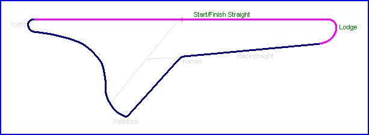

Charterhall - Scotland, United Kingdom
Type: Airfield Circuit
Length:
Charterhall aerodrome was a former World War II Airbase, located in the Scottish Borders between Greenlaw and Duns. It is
infamous as the site where RAF pilot Richard Hillary (author of 'The Last Enemy') was killed in a night training accident in 1943.
There is a memorial
to him at the Northwest entrance to the airfield site.
The circuit hosted it's first event on the 6th April 1952, which was a formula libre event
won by Bill Dobson in an F2 Ferrari. The 'Winfield Joint Committee Trophy' formula libre
race was held on the 31st May, which was won by Mike Hawthorn in a Cooper-Bristol at an
average speed of 78.6mph. At this meeting, the drivers reported the circuit to be quite
bumpy, although the general opinion was that it compared well with the other circuits in
use south of the border. During morning practice, the sun melted the tar at Lodge Corner,
however by the afternoon the sky had clouded and the surface hardened again.
For the twelve years of its operation, the circuit would host numerous Formula 2, Formula
Libre, Formula Junior and various sportscar events. It was also used as a test track for
the Ecurie Ecosse team. Drivers who raced there included Stirling Moss, Roy Salvadori,
Guiseppe Farina, Jack Walton and Jim Clark. Indeed, it was at Charterhall that Jim Clark
saw his first motor race, and he would later spend much of his racing career at the
circuit, competing in 31 events at the venue.
Motor racing events ceased at the circuit in 1964 when the Borders and District Motor Club
began organising races at the new circuit at Ingliston.
In more recent years, the Border Ecosse Car Club
have organised the 'Charterhall Stages rally' at the airfield. The tyres shown here in the
photographs were left behind following the 2003 running of this event.
|| Contents | Start/Finish Straight & Lodge | Backstraight & Kames | Paddock Bend & Toft's Turn || Home ||
Click on corner names above to view photographs of that section.

Text and photography by Daniel King & Richard King.
©racingcircuits.net - All rights reserved.